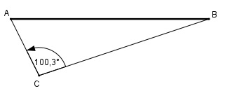

Aufgabe 191 Die Entfernung AB zwischen 2 Ortsmitten kann nicht direkt gemessen werden. Von einem Punkt C aus beträgt die Entfernung AC = 290 m und BC = 600 m und der ∡ BAC = 100,3°. Wie groß ist AB?

Fall SWS: Cosinussatz: AB2 = AC2 + BC2 - 2 * AC * BC * cos 100,3° AB2 = 2902 + 6002 - 2 * 290 * 600 * (- 0,1788) AB2 = 506 322,4 |√ AB = 711,6 m